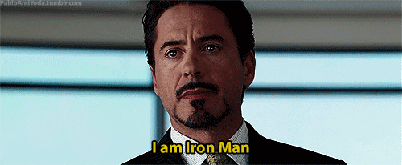
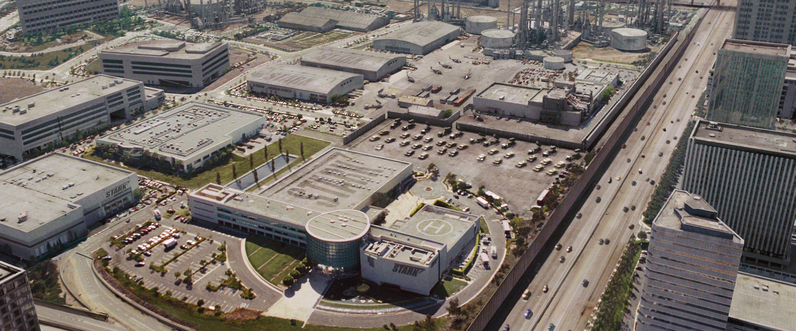

Anthony Edward Stark es el hijo del jefe de Industrias Stark, Howard Stark y su esposa
Maria Stark. Un niño genio que ingresa al MIT a la edad de 15 años para estudiar ingeniería mecánica y luego
recibe maestrías en ingeniería eléctrica y física. Después de que sus padres mueren en un accidente
automovilístico, hereda la compañía de su padre.
Mientras observaba los efectos de su tecnología experimental en el esfuerzo bélico estadounidense, Tony
Stark es herido por una bomba y capturado por Wong-Chu, quien le ordena diseñar armas. Sin embargo, las
lesiones de Stark son graves y la metralla se dirige a su corazón. Su compañero prisionero, Ho Yinsen, un
físico ganador del Premio Nobel, cuyo trabajo se había ganado la admiración de Stark en el colegio,
construye una placa pectoral magnética para evitar que la metralla alcance el corazón de Stark,
manteniéndolo vivo. En secreto, Stark y Yinsen utilizan el taller para diseñar y construir una armadura de
poder, la cual utiliza Stark para escapar. Sin embargo, durante el escape, Yinsen sacrifica su vida para
salvar a Stark, distrayendo al enemigo para que Tony recargara. Stark se venga de sus secuestradores y
escapa para reunirse con las fuerzas estadounidenses, conociendo en su camino a un piloto herido de la
marina estadounidense, James "Rhodey" Rhodes.
De vuelta a casa, Stark descubre que el fragmento de metralla alojado en su pecho no se puede quitar sin
matarlo, y él se ve obligado a utilizar la placa del pecho debajo de la ropa para actuar como un regulador
para su corazón. También tiene que recargar la placa todos los días o de lo contrario corre el riesgo de que
la metralla lo mate. La portada para Iron Man dice que él es el guardaespaldas de Stark y la mascota de su
empresa. Con ese fin, Iron Man lucha contra las amenazas a su empresa, (como la oponente comunista Natasha
Romanoff, el Dínamo Carmesí y el Hombre de Titanio), así como villanos independientes como el Mandarín,
quien finalmente se convertiría en su peor enemigo. Nadie sospecha de que Stark es Iron Man, ya que cultiva
su imagen como un millonario y empresario. Dos miembros notables del reparto de la serie, en este punto, son
su chófer personal Harold "Happy" Hogan, y su secretaria Virginia "Pepper" Potts, a quienes finalmente les
revela su identidad secreta. Mientras tanto, James Rhodes encuentra su propio lugar como el piloto personal
de Stark, revelándose como un hombre de extraordinaria habilidad y audaz por derecho propio.

Mark I
Iron Man posee una armadura motorizada que le da fuerza y durabilidad sobrehumanas, vuelo y una gran
variedad de armas. La armadura es inventada y usada por Stark (con excepciones ocasionales a corto plazo).
Otras personas que han asumido la identidad de Iron Man incluyen al socio de Stark y al mejor amigo James
Rhodes;93 asociados cercanos Harold "Happy" Hogan; Eddie March;9495 (brevemente) Michael O'Brien y Riri
Williams.
Los sistemas de armas del traje han cambiado con los años, pero las armas ofensivas estándar de Iron Man
siempre han sido los rayos repulsores que se disparan desde las palmas de sus guanteletes. Otras armas
incorporadas en varias encarnaciones de la armadura incluyen: el proyector de haz único en su pecho; pernos
de pulso (que acumulan energía cinética en el camino; por lo tanto, mientras más lejos viajan, más fuerte
golpean); un generador de impulsos electromagnéticos; y un escudo de energía defensivo que puede extenderse
hasta 360 grados. Otras capacidades incluyen: generar ultra-freón (es decir, un haz de congelación); creando
y manipulando campos magnéticos; emisión de explosiones sonoras; y proyectando hologramas tridimensionales
(para crear señuelos).
Además del modelo de uso general que usa, Stark ha desarrollado varios trajes especializados para viajes
espaciales,14 buceo en aguas profundas, sigilo,1516 y otros propósitos especiales. Stark ha modificado
trajes, como la armadura pesada de Hulkbuster. La armadura Hulkbuster está compuesta de complementos a su
llamada armadura modular, diseñada para aumentar su fuerza y durabilidad lo suficiente como para involucrar
a Hulk en una pelea.
Un modelo posterior, creado con la ayuda de Odín y el Uru de metal asgardiano, es similar al Destructor.
Stark desarrolla un paquete de electrónica durante las Guerras de armaduras que, cuando está unido a
armaduras que usan tecnologías de Stark, quemará esos componentes, haciendo que el traje sea inútil. Este
paquete no es efectivo en los modelos posteriores. Si bien se asocia típicamente con James Rhodes, la
armadura de Máquina de Guerra comenzó como una de las armaduras especiales de Stark.
Los modelos más recientes de la armadura de Stark, que comienzan con la armadura Extremis, ahora están
almacenados en las partes huecas de los huesos de Stark, y el implemento de red de área personal que se usa
para controlarla se implanta en su antebrazo y se conecta directamente a su sistema nervioso
central.
El Extremis ya se ha eliminado, y ahora usa armaduras más convencionales. Algunas armaduras todavía toman
una forma líquida, pero no están almacenadas dentro de su cuerpo. Su armadura Endo-Sym incorpora una
combinación del metal inteligente líquido con el simbionte alienígena Venom, controlado psiónicamente por
Stark.
Después de las Guerras Secretas, Stark usa una armadura más aerOdínámica que prácticamente puede
"transformarse" en otras armaduras o armas.
Stark Industries
Esta empresa industrial fue fundada por Howard Stark durante comienzos del siglo 20, siendo un pionero en
los
diferentes campos de la tecnología y ayudaba constantemente a las Fuerzas Armadas de los Estados Unidos con
distintas e innovadoras armas. También ayudó a crear el Suero del Súper Soldado. Años más tarde, creó un
Reactor
Arc junto con Anton Vanko, una fuente capaz de proporcionar energía libre, pura y eficiente para la planta
principal de Industrias Stark.
Tras la muerte de Howard Stark en 1991 a manos de HYDRA, la empresa fue heredada por Anthony Stark, con la
ayuda
de Obadiah Stane, aunque Stane fue nombrado Director General inmediatamente después de la muerte de Howard
antes
de que Anthony Stark pudiera asumir oficialmente el cargo.
Cuando una bomba fabricada por Industrias Stark aterrizó en el edificio donde vivía la familia Maximoff, sin
poder detonar, pero aún así matando a sus padres, los gemelos Wanda y Pietro Maximoff quedaron marcados por
la
experiencia y empezaron a odiar a Anthony Stark.
Después que Anthony Stark fuera secuestrado por la organización terrorista conocida como los Diez Anillos en
Afganistán y desarrollara una armadura accionada por un Reactor Arc en miniatura para escapar de su
cautiverio,
él tomó la decición de que Industrias Stark cerraría la división de armas, tras haber descubierto que sus
captores poseían su armamento y lo usaban para sus propósitos.
Stark trabajó en desarrollar el Mark II, y comenzó a buscar y destruir sus armas obtenidas por los Diez
Anillos.
Más tarde, él descubrió que Stane había sido quien le vendió sus armas a la organización terrorista; Stark
se
enfrentó a Stane, quien creó su propia armadura, y lo mató mientras peleaban en la Sede central de
Industrias
Stark.
Seis meses después, Anthony Stark re-inauguró la Stark Expo, y fue atacado por el hijo de Anton Vanko, Ivan,
quien creía que Howard Stark fue el responsable de la miseria y muerte de Anton, aunque Anton fue deportado
porque trató de utilizar el Reactor Arc para su propio beneficio.
A pesar de recibir criticas por los críticos como Bill O'Reilly, Stark nombró a Virginia Potts como la nueva
Directora General de Industrias Stark.
Anthony Stark más adelante abrió una nueva instalación de Industrias Stark en la ciudad de Nueva York,
construyendo la Torre Stark, que funcionaba con un nuevo prototipo del Reactor Arc en su interior. Mientras
tanto, Potts adquirió los permisos para construir una Torre Stark en Washington, D.C.
Insatisfecho por su posición anterior como el "Guardaespaldas de Iron Man", Harold Hogan fue contratado para
ser
el jefe de seguridad de la Sede central de Industrias Stark.
Tras la caída de S.H.I.E.L.D. y la contratación de Maria Hill, Industrias Stark hizo de la seguridad
privatizada
como una parte de sus servicios.
Algún tiempo después de la Batalla de Sokovia, Industrias Stark anunció nuevas becas para estudiantes
prometedores.
Asimismo, Stark presentó el B.R.E.A., el cual fue desarrollado por Quentin Beck y él quería seguir innovando
dicho sistema, pero Stark no estuvo de acuerdo y despidió a Beck al considerarlo "inestable". En respuesta,
Beck
se asoció con varios ex empleados de Industrias Stark para vengarse.
Sabiendo que el Atraco al tiempo resultaría para revertir el Chasquido, Anthony Stark tenía el
presentimiento de
que no sobreviviría y encargó sucederle las gafas que contenían a E.D.I.T.H. a Peter Parker, otorgándole
acceso
a la red satelital de Industrias Stark junto con un arsenal de misiles y drones. Aunque Quentin Beck logró
arrebatarle las gafas a Parker, este último las reclamó durante la Batalla de Londres.

Iron Man & Universo Cinematográfico de Marvel
Nombre
Año
Sinopsis
Iron Man
2008
Un empresario millonario construye un traje blindado y lo usa para combatir el crimen y el
terrorismo.
Iron Man 2
2010
Con el mundo ahora consciente de que él es Iron Man, el millonario inventor Tony Stark debe forjar
nuevas alianzas y confrontar a un enemigo nuevo y poderoso.
The Avengers
2012
El director de la Agencia SHIELD decide reclutar a un equipo para salvar al mundo de un desastre
casi
seguro cuando un enemigo inesperado surge como una gran amenaza para la seguridad mundial.
Iron Man 3
2013
El descarado y brillante Tony Stark, tras ver destruido todo su universo personal, debe encontrar y
enfrentarse a un enemigo cuyo poder no conoce límites. Este viaje pondrá a prueba su entereza una y
otra
vez, y le obligará a confiar en su ingenio.
Avengers: Age of Ultron
2015
Los Vengadores se reúnen de nuevo y juntan sus fuerzas con las de los recién llegados Quicksilver y
Bruja Escarlata para luchar contra un robot maquiavélico llamado Ultrón, el cual Tony Stark creó con
el
fin de defender la paz, pero resultó defectuoso y ahora pretende exterminar a toda la humanidad.
Captain America: Civil War
2016
Después de que otro incidente internacional, en el que se ven envueltos los Vengadores, produzca
daños
colaterales, la presión política obliga a poner en marcha un sistema para depurar responsabilidades.
Spider-Man: Homecoming
2017
Peter Parker asume su nueva identidad como Spider-Man y regresa a vivir con su tía después de su
aventura con los Vengadores. Al volver, mientras sigue bajo la tutela de Tony Stark, descubre que ha
surgido un nuevo y despiadado enemigo que pretende destruir todo lo que ama: el Buitre.
Avengers: Infinity War
2018
Los superhéroes se alían para vencer al poderoso Thanos, el peor enemigo al que se han enfrentado.
Si
Thanos logra reunir las seis gemas del infinito: poder, tiempo, alma, realidad, mente y espacio,
nadie
podrá detenerlo.
Avengers: Endgame
2019
Los Vengadores restantes deben encontrar una manera de recuperar a sus aliados para un
enfrentamiento
épico con Thanos, el malvado que diezmó el planeta y el universo.
Posters
Si deseas saber mas de Tony Stark y de Iron Man:
Más info